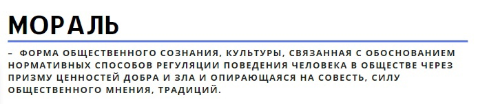
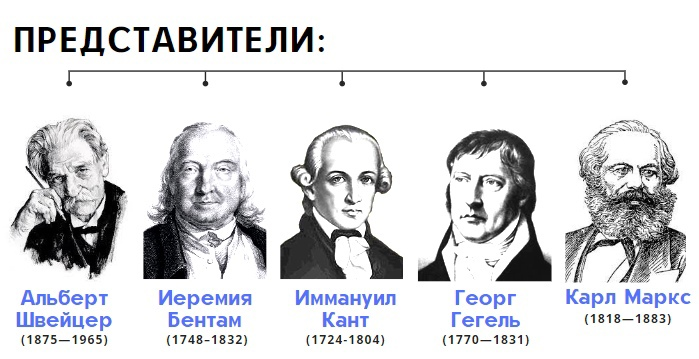
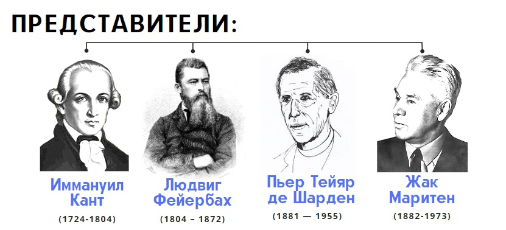

28. Понятие культуры. Проблема диалога культур и исторического самоопределения Беларуси в глобализирующемся мире.
Философия культуры является разделом философии, посвященным предельным основаниям и наиболее общим закономерностям культуры как деятельности, выраженной в символической форме в системе продуктов его деятельности и творчества, которые отличает человека и человечество от природной среды.
Культурология – наука изучающая культуру как часть системы общественных отношений, как важнейший продукт человеческой деятельности.
Традиция (от лат. tradition – передача; предание) – элементы социального и культурного наследия, передающиеся от одного поколения к другому. Новация – создание неизвестного ранее. Традиции и новации – две противоположных стороны единого процесса развития культуры.
Массовая культура - продукт массового потребления, ставший во-многом негативным символом ХХ века, т.к. связан с деградацией вкусов и предпочтений массового зрителя, некритическим восприятием и усвоением. популяризацией дешевых и низкосортных образцов культуры, феноменом культурных продуктов, как части рыночного пространства, инструментом маркетинга и продаж.
Проблема диалога культур и исторического самоопределения Беларуси в глобализирующемся мире связана с необходимостью самоопределения Беларуси как компактного государства в условиях экспансии и доминирования чужих культурных пространств, предполагающих поглощение и ассимиляцию белорусской национальной культуры (проблема защиты национального языка, например, который сложно использовать широко как простое и эффективное средство повседневного общения, других элементов национальной культуры). Все это важно для сохранения самобытности и самоидентичности белорусского этноса, т.к. он небольшой и может быть поглощен другими этносами и растворен в их культурах.
Проблема диалога культур в современном глобализирующемся мире связана с конфронтацией между этносами в связи с конкурентным взаимодействие их культур, их фактической борьбой между собой за доминирование. Т.е. требуется обеспечение такого диалога посредствам политики для сглаживания возникающих повсеместно противоречий (проведение дней национальных культур, реализация прав национальных меньшинств, проживающих на территории одной страны. поддержание толерантности и миролюбия, распространение норм политкорректности и т.д.).
29. Философия и мораль. Нравственный кодекс БГУИР: цели и ценностные приоритеты.
Начинать ответ на этот вопрос следует с анализа понятий «мораль» и «нравственность»
Нравственность - это понятие, которое является синонимом морали. Однако мораль рассматривается как форма общественного сознания, а нравственность - это сфера нравов, обычаев, практических поступков людей.
Мораль – форма общественного сознания, культуры, связанная с обоснованием нормативных способов регуляции поведения человека в обществе через призму ценностей добра и зла и опирающаяся на совесть, силу общественного мнения, традиций.
Мораль выступала как совокупность норм и правил поведения, выработанных обществом. Можно выделить профессиональную мораль, бытовую мораль и мораль семейную. При этом моральные требования имеют идейную основу, они связаны с пониманием того, как человек должен себя вести.
Представители: Швейцер, Бертам, Кант, Гегель, Маркс.
В условиях современного общества принято говорить о морально-нравственном кризисе современного социума, связанного с упадком норм культуры и поведения, распространения низкосортной информации через СМИ и интернет, что ведет к духовной деградации многих людей, засилью культуры потребительства и связанными с этим проявлениями эгоизма, хамства и невежества. В связи с огромными возможностями трансляции информации в условиях современного общества (СМИ, интернет) возникает значительное снижение качества такой информации, т.к. делать качественный информационный продукт в таких больших количествах невозможно в связи с чем приходится использовать базовые рефлексы человека, позволяющие привлечь его внимание к информации (прежде всего секс и насилие). Привыкание человека к таким триггерам ведет к появлению мировоззрения, невосприимчивого к проверенным временем классическим образцам культуры, их обесцениванию и появлению вакуума ценностей и образцов культуры. В условиях размытости ценностей культуры появляется реальная опасность морального разложения человека, крайних негативных проявлений эффекта вседозволенности. Знаменит в этой связи тезис-идея общества информационного изобилия – «не нравится – не смотри», который является основой для многочисленных дискуссий о том, требуется ли современному обществу цензура или иные виды информационных ограничений или нет. Актуальным вопросом также остается проблема деструктивной анонимности в сети интернет и поиска приемлемых форм ее замещения. использования новых оптимальных инструментов идентификации субъекта и при этом сохранения неприкосновенности его личности и личной информации, если это необходимо.
- Профессионализм: компетентность, инновационный и творческий подход к делу, инициативность, стремление к самосовершенствованию и профессиональному росту, настойчивость в достижении поставленных целей, трудолюбие, дисциплинированность.
- Высокая нравственная культура: требовательность к себе, вежливость, корректность и тактичность во взаимоотношениях, честность и правдивость, справедливость и доброжелательность, самокритичность, скромность.
- Гражданская зрелость: патриотизм, ответственность, активная гражданская позиция, объективность, гуманность.
30. Философия и искусство. Специфика эстетического отношения человека к миру.
Искусство один из важнейших элементов культуры, в котором аккумулируются художественно-эстетические ценности. В отличие от других сфер деятельности (род занятий, профессия, должность и т. д.) оно общезначимо, без него невозможно представить жизнь людей. Но, несмотря на древность искусства, его незаменимую роль в жизни человека, длительную историю эстетики, проблема сущности и специфики искусства до сих пор остается во многом нерешенной.
Искусство - специфическое духовно-практическое освоение мира, состоящее из различных его видов, родов, жанров, типов.
Искусствоведение (искусствознание) – наука, раскрывающая закономерности функционирования и развития различных видов искусства (ее отрасли музыковедение (теория музыки), литературоведение и т.п.).
Эстетика – философская наука, которая изучает прекрасное и безобразное в сфере художественного и технического творчества (искусства и дизайна), раскрывает универсальные основания эмоционального отношения человеку к миру.
Эстетика как философская наука выполняет и другие функции – воспитательную, развлекательную и т.п. Различные функции искусства в нем могут абсолютизироваться, выдвигаться на передний план, подчиняя себе все его другие функции.
Предметом изучения эстетики как особой философской науки является прекрасное и безобразное, создаваемое как в искусстве в целом, так и в эмоциональных отношениях человека к миру и, более широко, в других сферах человеческой жизни.
Специфика эстетического отношения человека к миру связана с тем, что основой искусства является такая уникальная способность человека как творчество. Не творить человек не может, творчество присутствует фактически в каждом действии человека, т.к. это отражение его индивидуальности. Зачем человеку творчество? Благодаря творчеству человек познает и развивает себя, раскрывает и обогащает свой внутренний мир, творчество связано часто с его увлечениями и хобби, также часто творчество становится основой его работы и профессии (во всяком случае, человек, прежде всего, стремится к такому сочетанию).
С вышесказанным связана практическая значимость искусства, которое часто рассматривается «технарями» как не имеющее практического смысла занятие. Кроме практической важности искусства для развития личности человека не меньшей важностью обладает практическое значение искусства для создания созидательного и позитивного настроения человека (отдельное направление прикладного искусства – дизайн в его различных видах: ландшафтный, интерьеров, транспорта, мебели, одежды и т.д.). Т.к. восприятие человеком всего прекрасного, окружение им себя прекрасными, красивыми, изящными предметами искусства способствует его хорошему самочувствию и продуктивному труду, проявлениям креативности, изобретательства.
31. Философия и религия. Деструктивная роль религиозного экстремизма в современном мире.
Религия – форма общественного сознания, основанная на вере в существование сверхъестественного.
Исследование религий в современном мире занимается такая ассоциированная с философией дисциплина как религиоведение.
Религия возникала после мифологического мировоззрения, предшествовала развитию философии и сопровождает развитие общества по настоящий день.
Бог – Абсолютное начало, от которого зависит все конечное, в том числе и человек. Высшим способом его постижения является откровение в виде канонических текстов (священных писаний) различных религиозных конфессий.
В структуре религии как сложного духовного и социального явления обычно выделяют: религиозное сознание, религиозный культ и религиозные организации. Важнейшей религиозной организацией является церковь.
В современной литературе сложились разные классификации религий по тем или иным критериям, признакам. С учетом историко-стадиальных этапов развития этносов выделяются, например, национальные и мировые религии. Из существующих в наши дни к национальным обычно относят даосизм, индуизм, иудаизм, синтоизм и др. Национальным религиям присуща ритуализация душевного и духовного мира людей посредством особой обрядности, особая система предписаний и запретов, отделяющих представителей данных религий и конкретных этносов от последователей других религий и представителей иных этносов. Мировые религии – буддизм, христианство, ислам - исторически связаны с национальными, но существенно отличны от них. Они появились в эпохи великих исторических поворотов, в условиях складывания «мировых империй». В мировых религиях, так или иначе, нашел отражение образ жизни больших регионов, различных классов, сословий, каст, племен, народностей. Мировым религиям свойственна пропагандистская активность, их проповедь носит межэтнический космополитический характер, обращена к представителям разных социальных групп.
Философия религии изучает предельные основания теоретического понимания Бога (Абсолюта) и его практического понимания как связи Бога (Абсолюта) с жизнью человека.
Философия религии развивали такие философы как: Кант, Фейербах, Тейяр де Шарден, Маритен и др.
Следует отметить, что несмотря на доминирование науки и известную из истории вполне очевидную аппозицию между наукой и религией (особенно в эпоху Средневековья) современное общество сочетает между собой данные формы культуры вполне гармонично, т.к. у каждой из них свои цели и функциональные поля. Наука вряд ли в ближайшем будущем сможет ответить на все волнующие человека вопросы, связанные с его жизнью и неизбежным прекращением существования, поэтому присутствие религии для современного общества как ранее. так и сейчас естественно и незаменимо. В тоже время наличие умеренных религиозных ориентаций и гуманистических ценностей мировых религий способно дополнить науку «человеческими» смыслами, подталкивающими к созидательной и осторожной деятельности во имя мира и блага человечества, как бы громко это ни звучало.
32. Понятие национального самосознания, его структура. Роль философии и социогуманитарного знания в трансформациях современной белорусской ментальности
Специфическим качеством и высшим выражением сознания у человека как члена общества является его самосознание. Оно есть осознание человеком своей собственной практической и духовной деятельности, осмысления своих поступков и отношения к другим людям. Уникален духовный мир и сознание личности. Но каждый человек тысячами различных нитей связан с социальными общностями разного уровня. Тем самым индивидуальное сознание содержит в себе не только сугубо личностное и частное восприятие действительности, но и испытывает общее с другими людьми отношение к ней. Вместе с тем, хотя общественное сознание и не обнаруживается вне сознания отдельных индивидов, оно вовсе не исчерпывается им.
Отличительной чертой белорусской философии является чуткое и незамедлительное реагирование на ключевые события в жизни народа и отражение культурно-политической истории Беларуси в национальном общественно-политическом творчестве. Главным фактором, интегрирующим разнообразные философско-социологические исследования различных этапов отечественной общественной мысли является изучение проблемы человека с позиций гуманизма.
Формирование белорусской философской мысли связано с процессом христианизации на Беларуси и развитием идей христианского Просвещения. Широко известны имена полоцкой княжны Предславы (Ефросинья Полоцкая), а так же религиозно-философских мыслителей Кирилла Туровского, Климента Смолятича и др. С одной стороны, для философского творчества этого периода характерно глубокое усвоение и осмысление идей Священного писания, с другой - своеобразная «сверка» собственного понимания христианского вероучения с идеями таких авторитетных христианских мыслителей как Афанасий Великий, Григорий Богослов и др. В богословско-философских рассуждениях отечественных христианских просветителей преобладает нравственная проблематика. В форме притч и аллегорий излагаются сложные понятия добра и зла, смысла жизни человека, смысла вселенской истории, раскрываются причины и цели существования мира. Второй период белорусской философии связан с вхождением Беларуси в состав Великого княжества Литовского и Речи Посполитой. Это период эпохи Ренессанса и Просвещения (Ф. Скорина, С. Будный, С. Полоцкий, К. Лыщинский и др.), осмысления и адаптации философских идей европейского Возрождения.